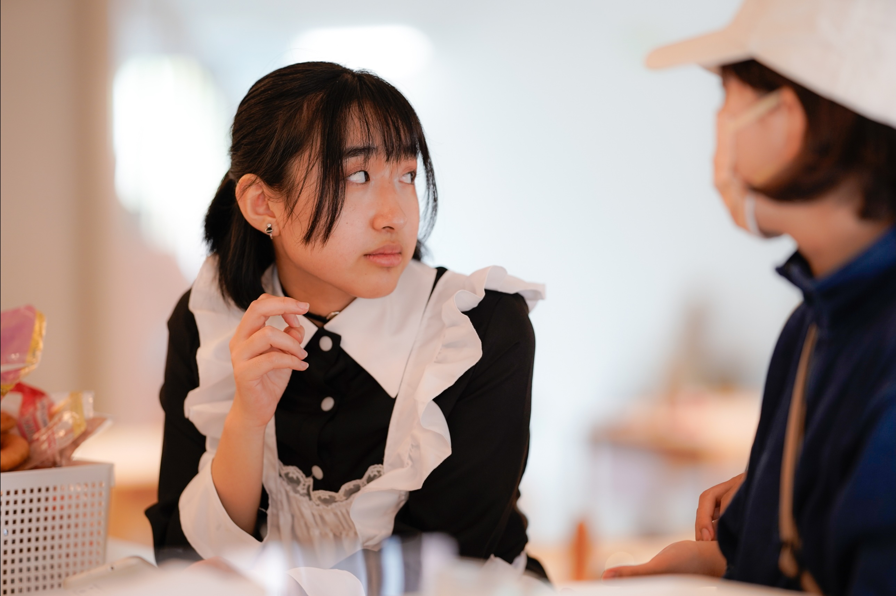
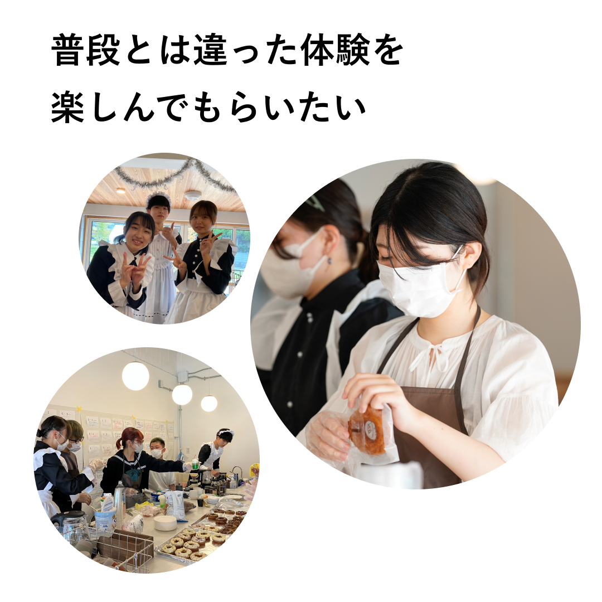

プロジェクト名：冥土喫茶
2023、2024年のまるごと祭にて、メイド喫茶の企画・運営を行いました。 来場者に「非日常の接客体験」を提供することを目的とし、単なる飲食ブースではなく、空間全体で楽しめる体験を設計しました。
企画立案からメンバー募集、企画書の作成を通して学びを得て、衣装や装飾、食材など必要な物品の選定と買い出しも担当しました。 限られた予算の中で雰囲気を成立させるため、優先順位をつけながら支出を調整し、領収書の管理や収支の記録も含めて運営しました。
また、当日の運営では接客・調理・会計の役割分担を事前に整理し、混雑時でもスムーズに回るよう動線やオペレーションを工夫しました。 人手が偏らないようシフトを見直すなど、状況に応じた調整も行いました。
その結果、企画から運営まで一貫してイベントを成立させる力を身につけることができました。 この経験を通して、アイデアを実行に落とし込み、限られた条件の中でチームとして動くための調整力を身につけました。